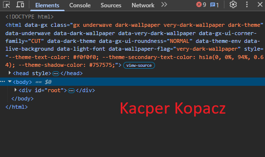

<textarea cols="70" rows="70">
    <h1>Do czego służy Pasek dewelopera, kiedy jest gotowy do użycia, wymień zakładki Paska developera?</h1><br>
Pasek dewelopera (Chrome DevTools) to wbudowany w przeglądarki  zestaw narzędzi, który służy do tworzenia, edycji i debugowania stron internetowych w czasie rzeczywistym. Pasek (karta) Deweloper w programach pakietu Microsoft Office (Excel, Word) jest gotowy do użycia natychmiast po jego aktywowaniu w opcjach programu, ponieważ domyślnie jest on ukryty.
<h1>Do czego służy Inspektor Elements, w jakiej zakładce się znajduje, do czego służy?</h1><br>
Inspektor Elementów, będący częścią narzędzi DevTools  w przeglądarce, to zaawansowana funkcja służąca do podglądu, analizy i tymczasowej edycji kodu HTML oraz CSS dowolnej strony internetowej w czasie rzeczywistym. Znajduje się w zakładce o nazwie Elements pod skrótem klawiszowym F12.

</textarea>
